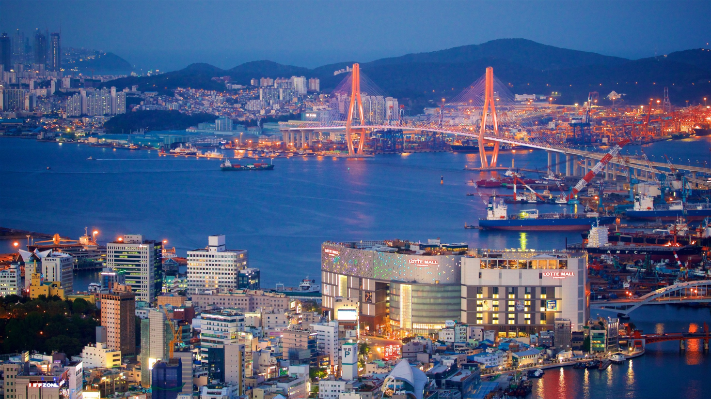

SUA PRÓXIMA VIAGEM:
Conheça Busan
Busan, a estrela em ascensão da Coréia do Sul, oferece de tudo, desde churrascarias de primeira linha, até tradicionais barracas de comida de rua. Aqui, exploramos a segunda cidade da Coréia do Sul e descobrimos as suas ofertas culinárias
PARA OS AMANTES DE HISTÓRIA:
Descubra 3 Destinos imperdíveis em Busan
As atrações de Busan vão desde templos budistas centenários que pontilham as montanhas e o litoral da cidade até praias imaculadas com águas cristalinas. Esta cidade litorânea tem muitas coisas para fazer o ano todo - as famílias podem passar o tempo em um aquário à beira-mar, os compradores podem explorar bairros vibrantes e os amantes da natureza podem desfrutar de longas caminhadas até mirantes panorâmicos. Os santuários budistas que pontilham a costa e as montanhas de Busan têm uma arquitetura impressionante que irá encantar os fotógrafos.

1. Templo Haedong Yonggungsa
O Templo Haedong Yonggungsa é um templo budista localizado no extremo nordeste de Busan. Construído em 1376, é um dos poucos templos na Coréia construídos à beira-mar - você pode desfrutar de vistas do Mar do Leste de um lado e de belas montanhas do outro
- Bom para:
- História

2. Templo Beomeosa
O Templo Beomeo-sa é um dos maiores santuários da Coreia do Sul. Ele está localizado no alto da borda leste da montanhas Geumjeongsa e fica distante da agitação da cidade. O Daeungejon Hall do templo é um exemplo bem preservado da arquitetura da Dinastia Joseon.
- Bom para:
- História